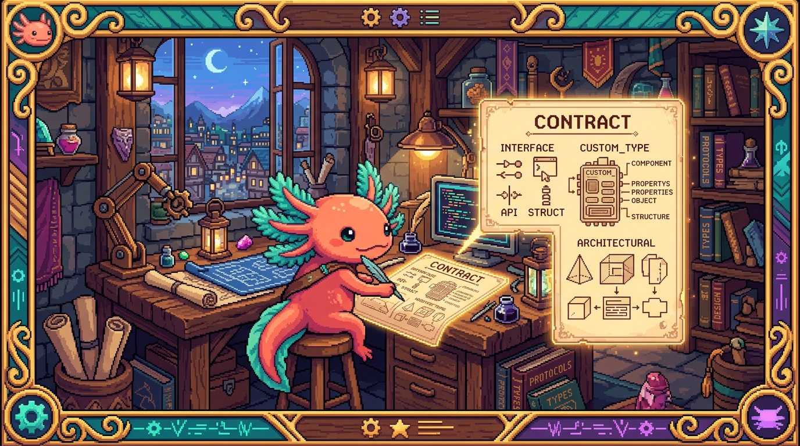

Capítulo 03 — Interfaces y tipos propios

Los tipos básicos te sacan del apuro cuando tienes una variable suelta. Pero los datos de verdad casi nunca vienen sueltos: son objetos con forma. Un usuario tiene nombre, edad y correo; un hábito tiene nombre, meta y color. En este capítulo vas a aprender a describir esa forma con
interfaceytype. Es, con diferencia, lo que más vas a escribir en TypeScript en tus apps.
1. El problema: describir la "forma" de un objeto
En el Módulo 03 trabajaste con los objetos de JavaScript, esos { nombre: "Edwar", edad: 25 } de
toda la vida. El problema es que nada te frena: puedes escribir mal el nombre de una propiedad o
meterle el tipo que no es, y nadie te avisa hasta que algo revienta. TypeScript te deja
declarar de antemano la forma que ese objeto debería tener.
🟦 ¿Qué significa? —
interface(interfaz)Una interface describe la forma que debe tener un objeto: qué propiedades lleva y de qué tipo es cada una. Piénsalo como una "ficha" o una plantilla de datos:
typescript interface Usuario { nombre: string; edad: number; activo: boolean; }Después le dices a un objeto que es de ese tipo, y a partir de ahí TypeScript se encarga de vigilar que cumpla la forma: ```typescript const edwar: Usuario = { nombre: "Edwar", edad: 25, activo: true };const malo: Usuario = { nombre: "Ana" }; // ❌ faltan 'edad' y 'activo' ```
💡 Tip — Convención de nombres
Las interfaces se escriben en PascalCase: igual que
camelCase, pero con la primera letra también en mayúscula. Así:Usuario,Habito,DailyCheckin. De un vistazo las distingues de las variables normales.
2. Propiedades opcionales y de solo lectura
🟦 ¿Qué significa? — Propiedad opcional (
?)Cuando una propiedad lleva un
?detrás, significa que puede estar o no estar:typescript interface Usuario { nombre: string; telefono?: string; // opcional: puede faltar } const a: Usuario = { nombre: "Edwar" }; // ✅ válido sin teléfono const b: Usuario = { nombre: "Ana", telefono: "..." }; // ✅ también🟦 ¿Qué significa? — Propiedad de solo lectura (
readonly)
readonlymarca una propiedad que no se puede cambiar una vez creado el objeto; viene a ser como unaconst, pero para propiedades. Lo típico es usarlo en losid:typescript interface Usuario { readonly id: string; // no se reasigna nombre: string; }
3. Anidar y combinar tipos
Las interfaces pueden contener otras interfaces y listas, así que reflejan datos reales sin problema:
interface Habito {
readonly id: string;
nombre: string;
meta: number;
color: string;
categoria: "lectura" | "ejercicio" | "salud" | "otro"; // unión de literales
}
interface Usuario {
nombre: string;
habitos: Habito[]; // una lista de hábitos
}
Fíjate en lo que pasa aquí: un Usuario tiene una lista de Habito, y cada Habito solo acepta
unas categorías concretas. Con esto, TypeScript conoce la forma completa de tus datos, así que
te autocompleta y te corrige sobre la marcha.
🔎 En tu código
Abre
RachaSimple/src/types/database.ts. Es justamente eso: un archivo lleno de interfaces que describenUserProfile,Habit,DailyCheckin,RescuePlany demás. Ahí está la "fuente de la verdad" sobre cómo son los datos de la app. Cuando un componente usa un hábito, TypeScript ya sabe que ese hábito tienenombre,meta,color… y te avisa en cuanto te equivocas. Funciona como un mapa que mantiene a todo el equipo (y a la IA) de acuerdo sobre la forma de los datos.
4. type: la otra forma de crear tipos
🟦 ¿Qué significa? —
type(alias de tipo)
typetambién sirve para crear tipos propios. Para objetos es casi intercambiable coninterface:typescript type Usuario = { nombre: string; edad: number; };La diferencia que vas a notar al empezar es quetypese mueve mejor con cosas que no son objetos. Por ejemplo, ponerle nombre a una unión:typescript type EstadoCheckin = "completed" | "minimum" | "recovery" | "no_done";A partir de ahí usasEstadoCheckindonde quieras sin tener que repetir la lista entera cada vez.💡 Tip — ¿
interfaceotype?Una regla sencilla para arrancar: - Si vas a describir la forma de un objeto → tira de
interface. - Si es una unión, un alias o algo que no es un objeto → tira detype. En la práctica los dos sirven para objetos, y muchos equipos eligen uno solo por consistencia. No le des más vueltas: lo que importa es describir tus datos, y eso lo logras con cualquiera.
✅ Checklist — ¿ya domino esto?
- [ ] Creo una
interfacepara describir la forma de un objeto. - [ ] Uso propiedades opcionales (
?) y de solo lectura (readonly). - [ ] Anido tipos (una interface con una lista de otra) y uso uniones de literales dentro.
- [ ] Sé qué es
typey cuándo conviene frente ainterface. - [ ] Entiendo que
database.tsde RachaSimple es la "ficha" de todos sus datos.
🧪 Ejercicios
- Tu primera interface. Escribe una
interface Productoconid(solo lectura, string),nombre(string),precio(number) yenOferta(boolean, opcional). - Objeto válido. Crea un objeto que cumpla tu
interface Producto. Luego intenta crear uno al que le falteprecio: ¿qué dirá TypeScript? - Unión con type. Crea
type Prioridad = "alta" | "media" | "baja";y una variable que la use. - Anidar. Escribe una
interface Pedidoque tengacliente: stringyproductos: Producto[]. - Lee tu app. ¿Qué crees que contiene la interface
Habitendatabase.tsde RachaSimple? Enumera 3 o 4 propiedades que tendría y su tipo.
➡️ Siguiente: Capítulo 04 — Funciones tipadas y genéricos.